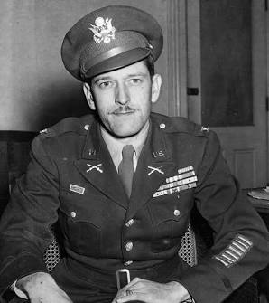

"We were not stragglers hiding out to save our skins; we were an army operating behind enemy lines." — R.W. Volckmann

Russell W. Volckmann was a West Point graduate whose refusal to submit to enemy occupation reshaped modern warfare. Hiding in the rugged Cordillera mountains near Baguio City after the fall of Bataan in 1942, Volckmann organized one of the most effective guerrilla forces in World War II, commanding over 20,000 Filipino and American fighters. His wartime experiences became the blueprint for U.S. Army Special Forces doctrine, earning him recognition as one of the founding fathers of the Green Berets.